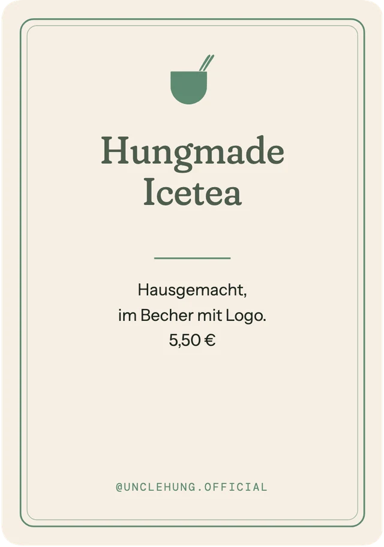
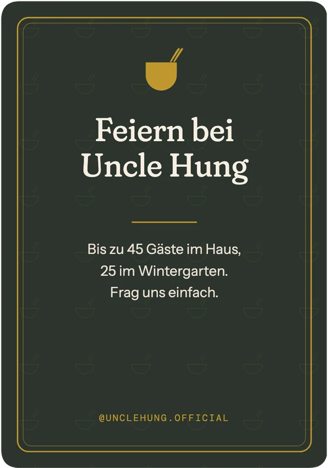
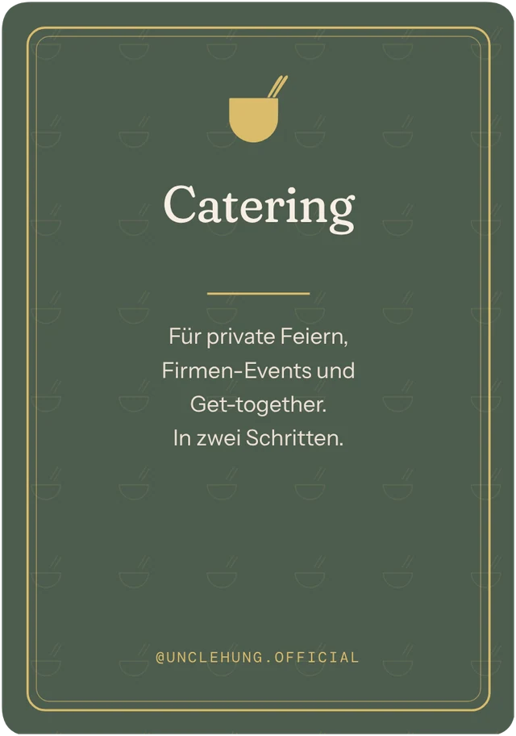
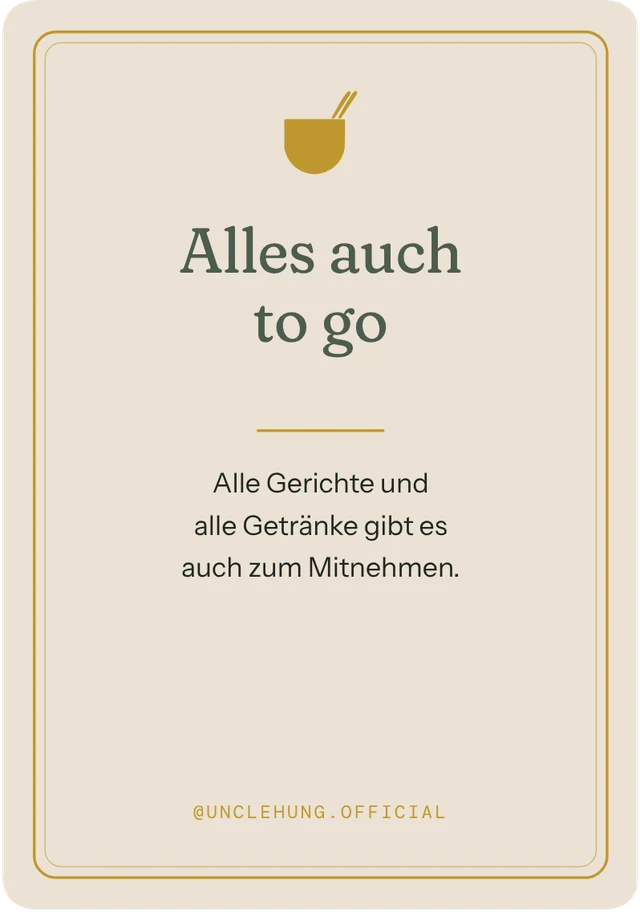
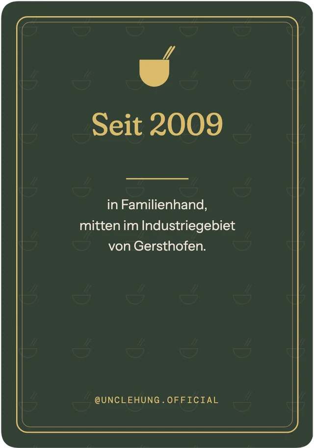
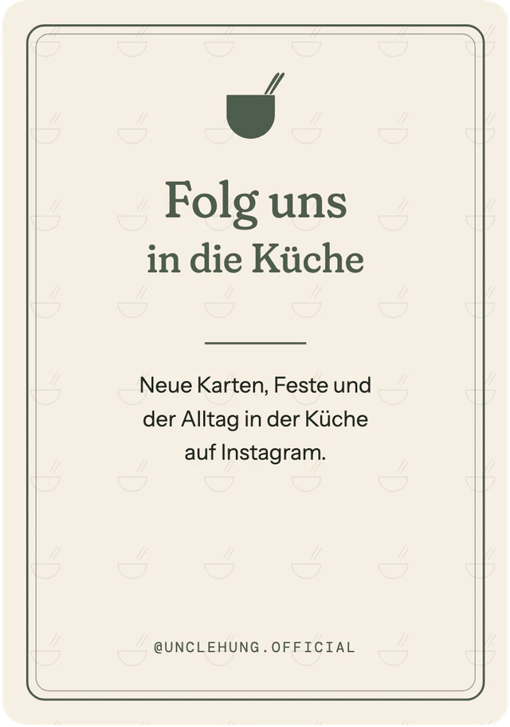
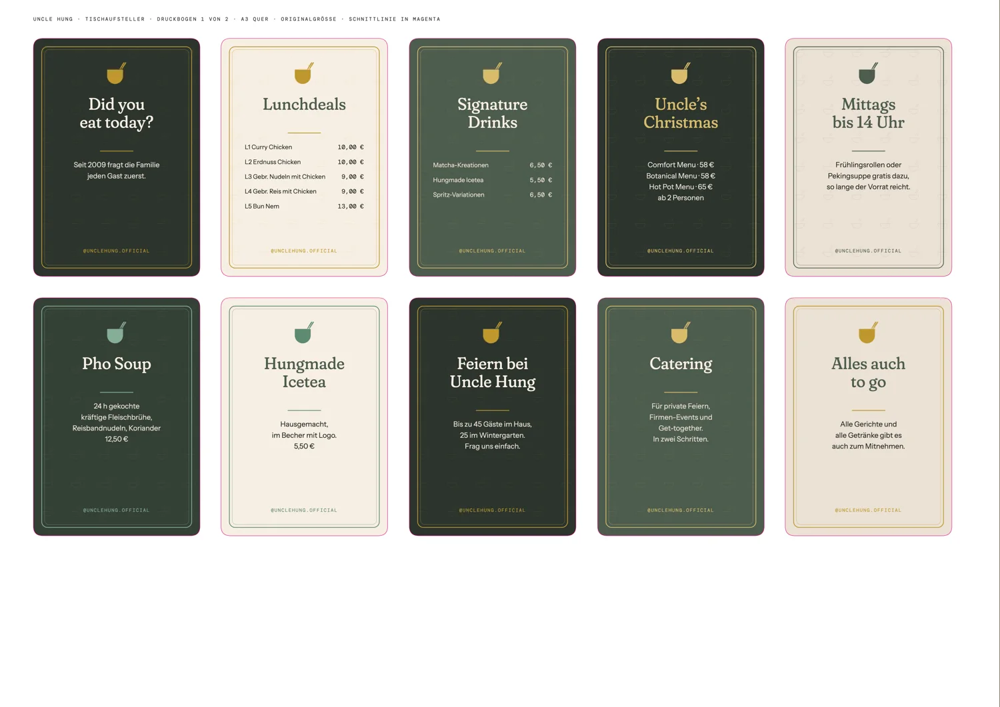

09Ideen für Papier
Zwölf Tischaufstellerfür jeden Tisch.
Ein Aufsteller auf dem Tisch erzählt, was es heute gibt. Hier sind zwölf Aufsteller als Idee, in Salbei, Creme und Gold, mit Sätzen und Preisen von Ihrer Karte.
01Die Tischaufsteller
Zwölf Tischaufsteller.
Die Schale kommt aus Ihrem Profilbild, die Tapete aus Schale und Stäbchen, die Sätze und Preise von Ihrer Karte und Ihrer Seite.

Ihre Frage
Die Frage aus Ihrer Bio, groß auf dem Tisch.
70 auf 100 mmLunchdeals
L1 bis L5 mit Preisen, täglich bis 14 Uhr.
70 auf 100 mmSignature Drinks
Matcha, Icetea und Spritz mit Preisen.
70 auf 100 mmUncle’s Christmas
Die drei Weihnachtsmenüs mit ihren Preisen.
70 auf 100 mm
Gratis dazu
Der Satz zu den Lunchdeals.
70 auf 100 mmDie Pho
V5 aus den Favoriten, mit der Brühe, die einen Tag zieht.
70 auf 100 mm
Hungmade Icetea
Der Icetea des Hauses.
70 auf 100 mm
Feiern
Platz im Haus und im Wintergarten.
70 auf 100 mm
Catering
Der Weg zum Catering, kurz.
70 auf 100 mm
To go
Aus der Seite «Mittag».
70 auf 100 mm
Seit 2009
Der Satz der Familie zur eigenen Geschichte.
70 auf 100 mm
Instagram
Der Weg zu @unclehung.official.
70 auf 100 mm
02Für die Druckerei
Der Druckbogen.
Alle Tischaufsteller liegen in Originalgrösse auf zwei Bögen im Format A3, mit einer Schnittlinie je Stück. Dazu gibt es jedes einzeln als PDF.
12 Tischaufsteller · 70 bis 100 mm · Schnittlinie in Magenta

Dazu gibt es acht Drucksachen und Ihre Unterlagen im selben Stil.